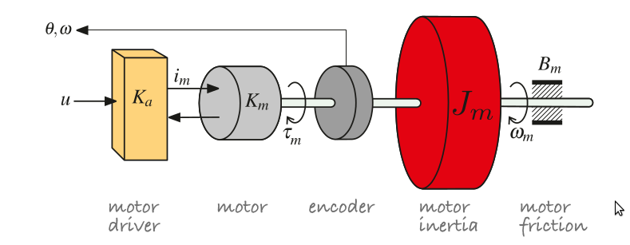
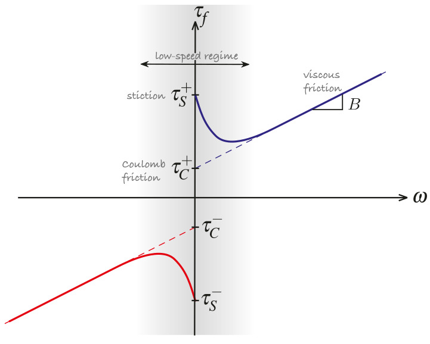
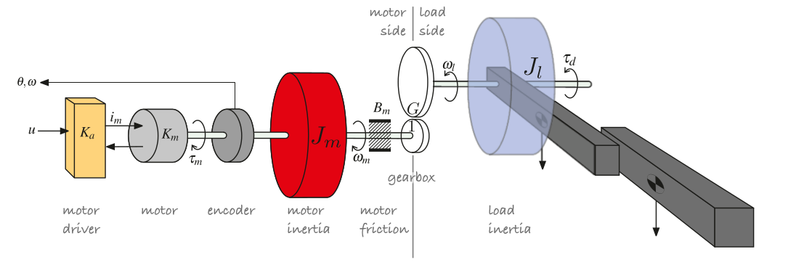
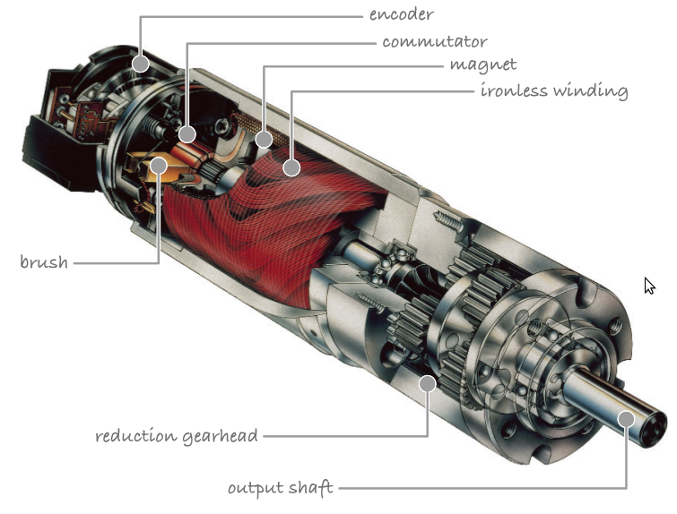
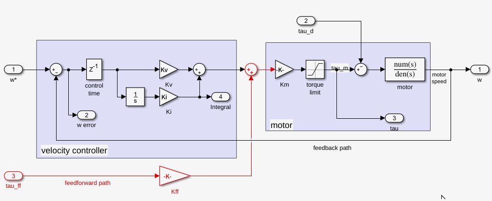
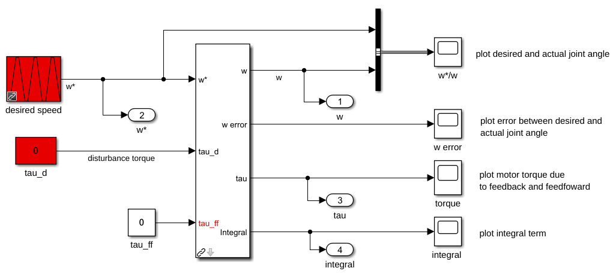

目的
- 讨论串联机械臂的动力学与控制,在simulink上测试机器人三环控制,参考书为robotics,vision,and control,第二版.
回顾
- 动力学方程
正文
independent joint control (独立关节控制)
机器人传动系统包括驱动器(电机)以及连接至杆的传动装置. 机器人关节控制的一种常见方法是将每个关节视作一个独立的控制系统, 使其精确跟随各自关节角度轨迹.由于作用在关节上重力,速度及加速度的耦合,摩擦力产生的各种干扰使得情况变得复杂. 所以, 嵌套的控制回路是一种常见的控制结构.
其outer loop(外环)负责保持关节位置(p),并确定使位置误差最小的关节速度(velocity of joint);inner loop(内环)负责保持外环所需的关节速度.
Actuators
如今多数机器人都是旋转电机(rotary electric motors)驱动的.大型工业机器人通常使用无刷伺服电机(brushless servo motors).而实验室多数使用直流有刷电机(brushed DC motors)或步进电机(stepper motors).采矿,林业或建筑业中大负载机械手通常使用液压驱动(electro-hydraulic).

电压$u$控制流入电机的电流$i_m$,产生转矩$\tau_m$,加速电机惯量$J_m$,其相对摩擦力记为$B_m\omega_m$.编码器测量转角及转速$\theta,\omega$.上图再接入齿轮箱,对于一个$G:1$的减速传动,连杆处扭矩应是电机扭矩$G$倍.
电机可以由电流或电压控制.我们假设由电机驱动或放大器(amplifier)提供电流. $i_m = K_a u$. 其中$K_a$为transconductance of amplifier,单位为$(AV^{-1})$ .电机产生的转矩正比与电流: $\tau_m = K_m i_M$.其中$K_m$为电机转矩系数,$(NmA^{-1})$.
Friction
任何旋转的机械,电机或齿轮箱(gearbox)都受到摩擦力影响.电机净转矩为 $\tau’ = \tau_m- \tau_f$.其中$\tau_f = B\omega + \tau_C$. 其中$B>0$为粘性摩擦系数(viscous friction coefficient), 偏移量为库伦摩擦力.后者由非线性函数建模. $\tau_C = 0, \omega = 0$,$\tau_C = \tau^+_C , \omega > 0$.
摩擦力系数取决与旋转方向,库伦摩擦的不对称性比粘性摩擦更明显.

在低速情况下(灰色区域),粘滞现象(stiction effect)明显.机器移动后,静摩擦迅速减小,粘性摩擦起主导作用.
Effect of the link mass
连杆对电机有两个显著影响,它增加了额外的惯性,并由于臂的重力增加了转矩,两者随关节位型而变化.以下图为例,考虑2-平面机械臂.第一连杆为红色,假设质量集中在质心处,额外的惯量(extra inertia)记为$m_1r_1^2$.电机还将受蓝色杆的影响,惯量取决于$q_2$–直臂的惯性大于折叠情况.

我们将看到作用在红色连杆质心处重力将在关节1电机上产生与$\cos{q_1}$正比的力矩.而在蓝色杆上的杠杠效应则更大.
1 | >> mdl_twolink_sym |
$\tau_1 = M_{11}\ddot{q}+ M_{12}(q_2)\ddot{q_2} + C_1(q_2)\dot{q_1}\dot{q_2}+ C_2(q_2)\dot{q_2}^2+g(q_1,q_2)$, (1)
$g = (a_1m_1+a_1m_2+c_1m_1)\cos(q_1)+ (a_2m_2+c_2m_2)\cos(q_1+q_2)$
我们可以通过课本提供的工具箱确定作用在每个关节的力矩(作为关节位置,速度,加速度的函数).
Gearbox
电动机产生不了非常大扭矩.其输出转速可以非常高,因此配合齿轮减速装置来降低转速提高转矩.齿轮变速箱缺点是增加了成本,重量和摩擦噪声.许多高性能机器人会采用昂贵大扭矩电机直接驱动,或使用薄金属带而不是齿轮来获得一个非常低的传动比.

连杆惯性矩阵记为$J_l$.运动引起的力矩记为$\tau_d$.如上图.在参考系$l$测量值与$m$系下的参考值有关.
$^l\tau_C=G\cdot ^m\tau_C, ^l\omega = ^m\omega/G$.
从电机看,其惯性由2部分组成,其一是电机本身的旋转部分,即转子(rotor),记为$J_m$.该值在制造商数据手册中会提供.其二是可变的负载惯性$J_l$(variable load inertia),是动连杆(driven link)及连接到它的所有连杆惯性之和.对于关节$j$,它就是方程(1)构造的惯性矩阵元素$M_{jj}$.
Modeling the robot joint
完整的电机驱动器包括产生转矩的电机,齿轮箱(gearbox,变速箱,放大转矩并减小负载的影响),编码器(位置,速度反馈).如下图

建立电机轴(motor shaft)力矩平衡方程(在参考系$m$下):
$K_mK_au- B’\omega -\tau’_C -\frac{\tau_d(q)}{G} = J’\dot{\omega}$,(2)
其中$B’,\tau’_C,J’$,
分别由电机,齿轮箱,和负载引起的有效总粘性摩擦,库伦摩擦和惯性.
$B’=B_m+ \frac{B_l}{G^2},J’=J_m+ \frac{J_l}{G^2}$.
为了分析(2),首先将其线性化: $B’\omega+J’\dot{\omega} = K_mK_au$.
再经Laplace变换: $sJ’ \Omega(s) + B’\Omega(s) =K_mK_aU(s)$. 其中$\Omega(s),U(s)$分别是时域信号$\omega(t),u(t)$的laplace变换.
将其改写为
以puma 560第二个关节为例.在其它参数未给明情况下,取$B’ =B_m$,由$J’ =J_m+ \frac{J_l}{G^2}$可计算其有效惯量($M_{22}$随位型而变化,假设其为 $4.43kg/m^2$,则计算$J’ =5.8\times 10^{-4} kg/m^2$)
1 | mdl_puma560 |
一旦有了这种形式的模型,我们可以绘制阶跃响应(step response)并使用一系列标准控制系统设计工具.
Velocity control loop
嵌套的控制回路是一种常见的控制结构. 其outer loop(外环)负责保持关节位置(p),并确定使位置误差最小的关节速度(velocity of joint);inner loop(内环,速度环)负责保持外环所需的关节速度.电机速度控制对所有类型机器人都很重要,不仅仅是串联机械臂.例如第4章中所讨论的小车车轮速度和四旋翼转子速度.
simulink模型如下.电机驱动器输入为所需速度和实际速度误差.1ms延迟用来模拟速度控制算法的计算时间,而饱和器(saturator)模拟电机提供的最大力矩.


考虑比例控制情况$K_i=0$, $u^* =K_v(\dot{q}^*-\dot{q})$.其中输入$\tau_d$用于模拟作用在关节上的干扰力矩.
1 | vloop_test |
经过少量实验, 当$K_v=0.6$可获得满意的性能.在不连续处会有轻微过冲(overshoot),但增益越小,会导致速度误差越大,而增益对大,会导致振动(oscillation),控制工程需要权衡.
从实验结果(运行上述代码)来看,可观察到非常小的稳态误差(steady-state Error)-实际速度始终低于要求.从经典控制系统角度来看,速度环不包括积分模块(integrator block),并且归类为0类系统(type 0 system,对于恒定输入表现出有限的误差).更直观说,为了以恒定速度移动,电机必须产生有限的力矩来克服摩擦,由于电机力矩与速度误差成正比,因此存在有限速度误差.
接下来我们研究惯性变化对闭环控制的影响.结果显示对于8连杆惯性,不稳定,对于较大的惯性,跟踪误差衰减.